Zhuoyan XuApplied Scientist at AWS AIContact: zhuoyanxu1 [at] gmail [dot] com Google Scholar | Semantic Scholar | Github | LinkedIn | CV | X (Twitter) |

|
About Me
I am an Applied Scientist at AWS AI in New York City, working on AI agent.
I obtained my Ph.D. at the University of Wisconsin-Madison co-advised by Prof. Yin Li , Prof. Yingyu Liang and Prof. Yiqiao Zhong . I am also fortunate to work with Prof. Kris Sankaran . My Ph.D. Thesis is Towards Better Foundation Models: Theory and Methods for Adaptation and Deployment . I obtained my M.S. degree in Computer Science from UW-Madison. Prior to that, I obtained my B.S. degree in Statistics from Wuhan University in 2019.
News
- [3/2/2026]: Join AWS AI as an applied scientist, working on agent.
- [1/4/2026]: Internship work in AWS AI got into Findings of EACL 2026!
- [12/16/2025]: Successfully defended my PhD dissertation!
- [6/25/2025]: One paper got accepted into ICCV 2025. Thanks to all the collaborators! See you in Hawaii.
- [5/19/2025]: Join Amazon as a applied scientist intern. Work on Agentic AI.
- [12/17/2024]: Passed my prelim exam, PhD candidate now!
Publications
* denotes equal contribution or alphabetical order.|
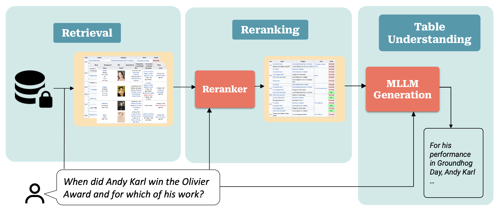 |
Efficient Table Retrieval and Understanding with Multimodal Large Language Models
Zhuoyan Xu, Haoyang Fang, Boran Han, Bonan Min, Bernie Wang, Shuai Zhang EACL 2026 Findings [ Paper ] [ arXiv ] |
|
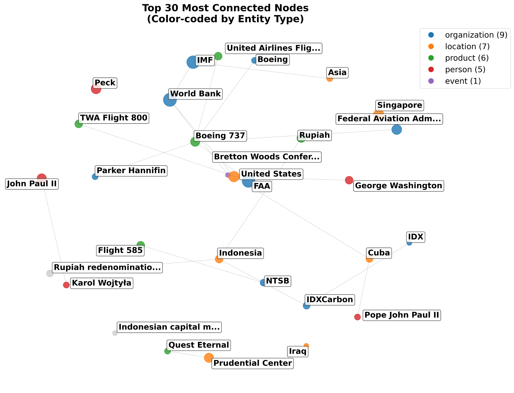 |
Augmenting Agent Memory With Temporal GraphRAG
Zhuoyan Xu, Debanjan Datta, Mukul Prasad Work done during internship at AWS summer 2025 [ Abstract ] |
|
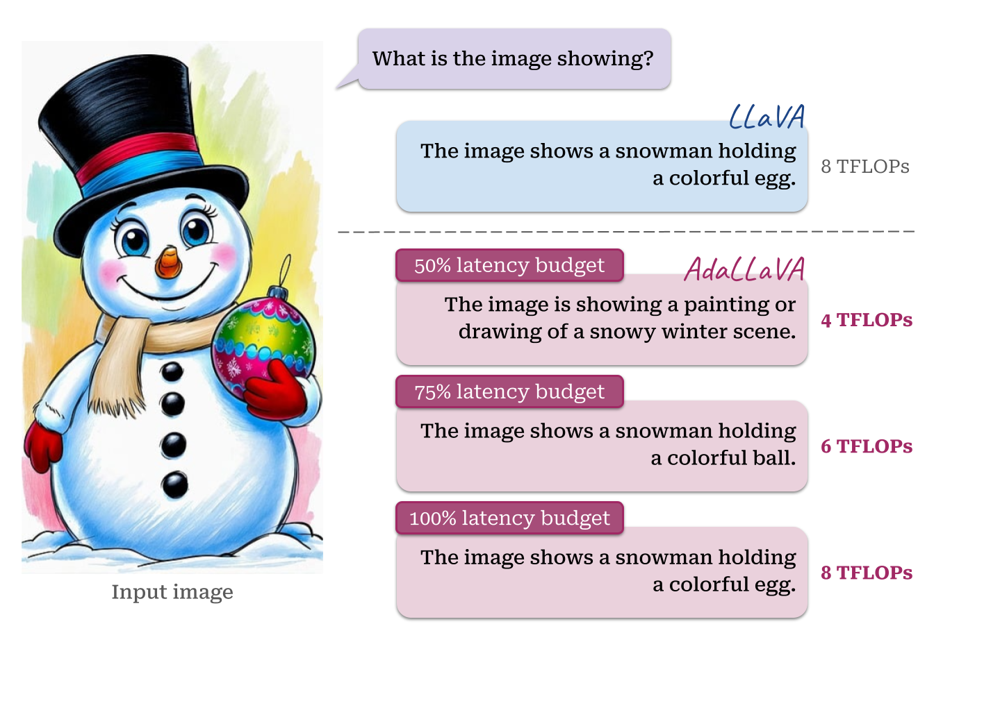 |
AdaLLaVA: Learning to Inference Adaptively for Multimodal Large Language Models
Zhuoyan Xu*, Khoi Duc Nguyen*, Preeti Mukherjee, Saurabh Bagchi, Somali Chaterji, Yingyu Liang, Yin Li ICCV 2025 [ Website ] [ Paper ] [ arXiv ] [ Code ] [ HuggingFace ] [ Poster ] [ Video ] |
|
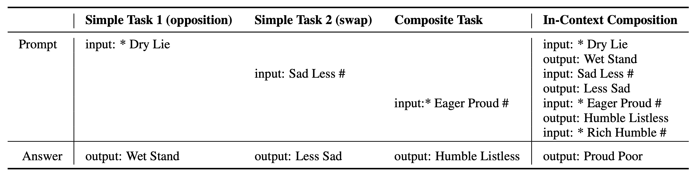 |
Can Language Models Compose Skills In-Context?
Zidong Liu, Zhuoyan Xu, Zhenmei Shi, Yingyu Liang arXiv 2025 [ paper ] |
|
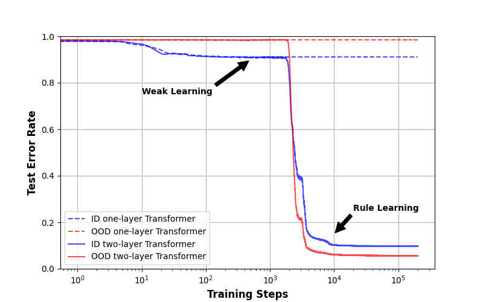 |
Out-of-distribution generalization via composition: a lens through induction heads in Transformers
Jiajun Song, Zhuoyan Xu, Yiqiao Zhong PNAS (Proceedings of the National Academy of Sciences) 2025 [ PNAS ] [ arXiv ] [ Code ] [ Blog ] [ Poster ] |
|
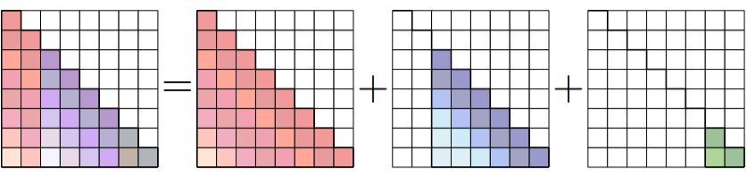 |
Conv-Basis: A New Paradigm for Efficient Attention Inference and Gradient Computation in Transformers
Yingyu Liang*, Heshan Liu*, Zhenmei Shi*, Zhao Song*, Zhuoyan Xu*, Junze Yin* EMNLP 2025 Findings [ OpenReview ] [ arXiv ] |
|
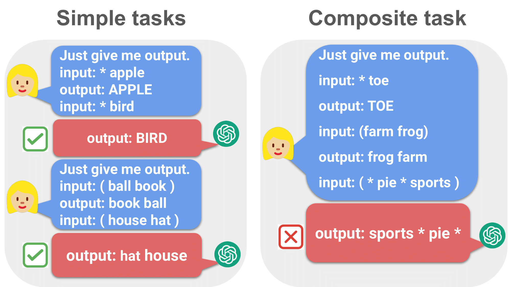 |
Do Large Language Models Have Compositional Ability? An Investigation into Limitations and Scalability
Zhuoyan Xu*, Zhenmei Shi*, Yingyu Liang COLM (Conference on Language Modeling) 2024 [ OpenReview ] [ arXiv ] [ Code ] [ Poster ] [ Workshop ] [ Workshop Poster ] [ Workshop Slides ] |
|
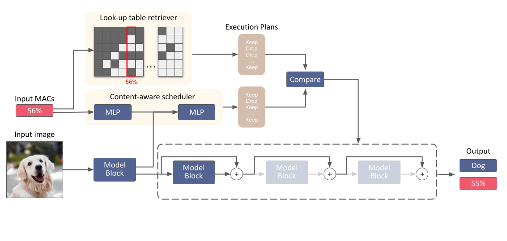 |
AdaInf: Adaptive Inference for Resource-Constrained Foundation Models
Zhuoyan Xu, Khoi Duc Nguyen, Preeti Mukherjee, Somali Chaterji, Yingyu Liang, Yin Li ICML 2024 Workshop [ OpenReview ] [ Poster ] |
|
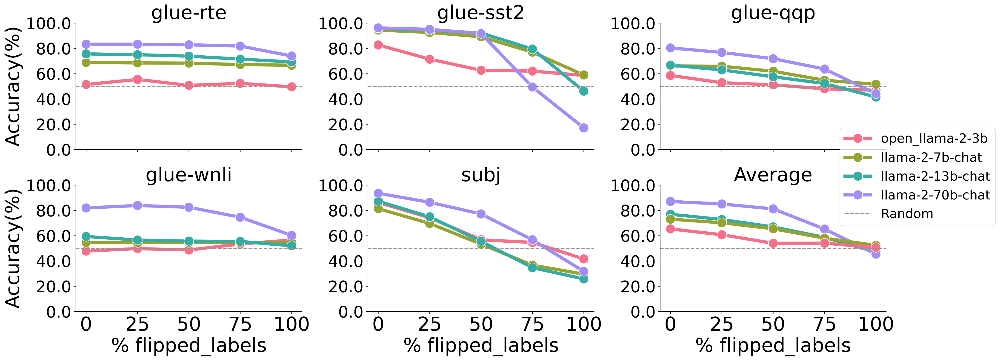 |
Why Larger Language Models Do In-context Learning Differently?
Zhenmei Shi, Junyi Wei, Zhuoyan Xu, Yingyu Liang ICML 2024 [ Openreview ] [ arXiv ] [ Poster ] [ Workshop ] [ Workshop Poster ] |
|
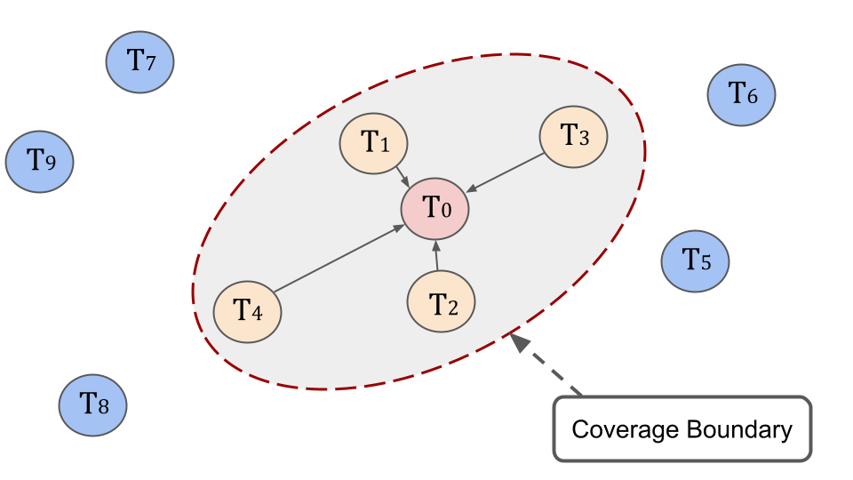 |
Towards Few-Shot Adaptation of Foundation Models via Multitask Finetuning
Zhuoyan Xu, Zhenmei Shi, Junyi Wei, Fangzhou Mu, Yin Li, Yingyu Liang ICLR 2024 [ OpenReview ] [ arXiv ] [ Code ] [ IBM Research Talk Slides ] [ Poster ] [ Video ] [ Workshop ] [ Workshop Poster ] [ Workshop Slides ] |
|
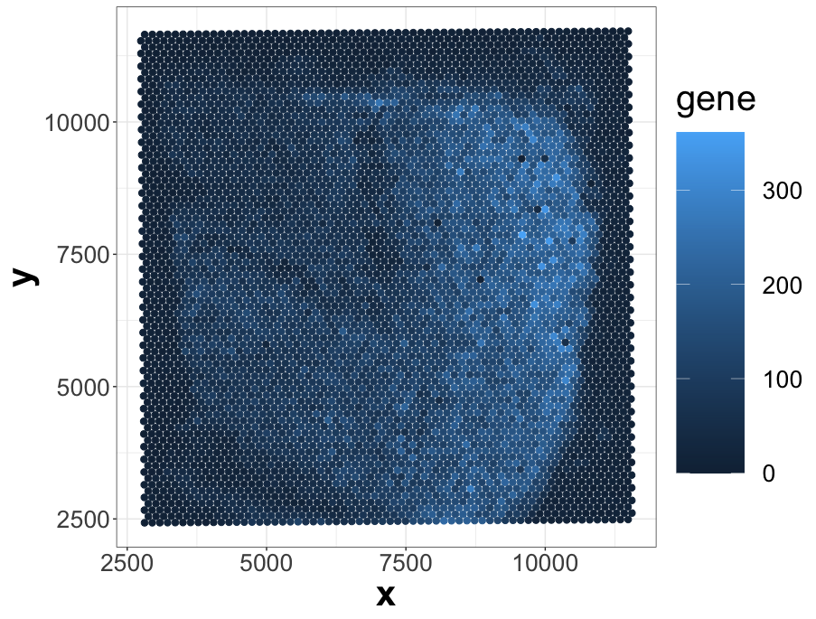 |
Spatial Transcriptomics Dimensionality Reduction using Wavelet Bases
Zhuoyan Xu, Kris Sankaran F1000 2022 [ F1000 Research ] [ arXiv ] [ Rpackage ] [ code ] |
|
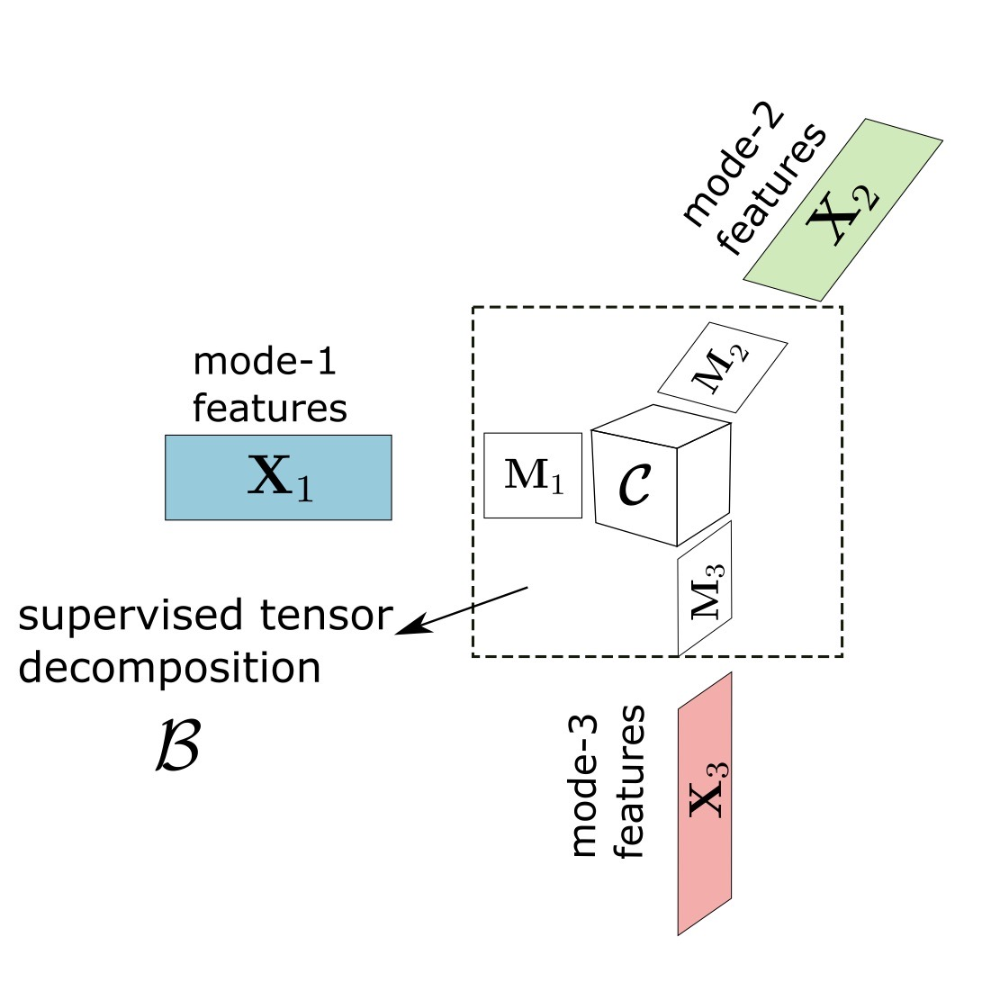 |
Generalized Tensor Regression with Covariates on Multiple Modes
Zhuoyan Xu, Jiaxin Hu, Miaoyan Wang arXiv 2019 [ arXiv ] [ Rpackage ] |
{kind=link}
{kind=link}
{kind=link}
{kind=link}
{kind=link}
{kind=link}
{kind=link}
{kind=link}
{kind=link}
{kind=link}
{kind=link}
{kind=link}
Research & Work Experience
|
Research Assistant
University of Wisconsin-Madison 2022 - Now | Prof. Yingyu Liang and Prof. Yin Li 2023 - Now | Prof. Yiqiao Zhong 2021 - 2022 | Prof. Kris Sankaran |
|
|
Applied Scientist Intern
Amazon AWS AI in Bellevue, WA Summer 2025 | Debanjan Datta , Guru Nayak and Mukul Prasad Summer 2024 | Shuai Zhang , Boran Han and Haoyang Fang |
|
|
Machine Learning Engineer Intern
John Deere in Fargo, ND Summer 2022 | Lav Thyagarrajan |
|
|
Data Scientist Intern
China Merchants Bank in Shanghai, China Summer 2018 |
Academic Services
Conference Reviewer at ICML 2024-2025, NeurIPS 2024, ICLR 2025, AISTATS 2025, CVPR 2025, ICCV 2025, ECCV 2026Teaching
Teaching Assistant:STAT 371: Introductory Applied Statistics for the Life Sciences (20 Fall)
STAT 301: Introduction to Statistical Methods (21 Spring, 21 Summer)
STAT 303-305: R for Statistics (21 Fall)
STAT 479: Statistical Data Visualization (22 Spring)
Instructor of VISP Non-credit program:
Intro to Big Data (Jan. to Feb. in 2020) [ Slides1 , Slides2 ]
Misc
ThesisDefense Slides
Last updated: Mar 30, 2026